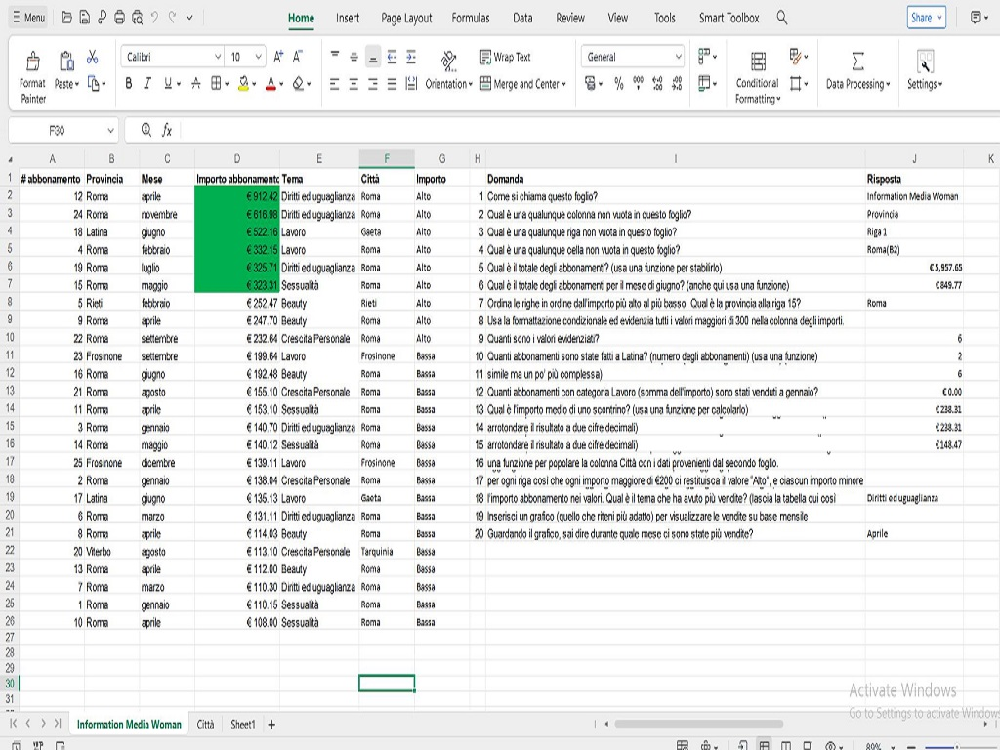
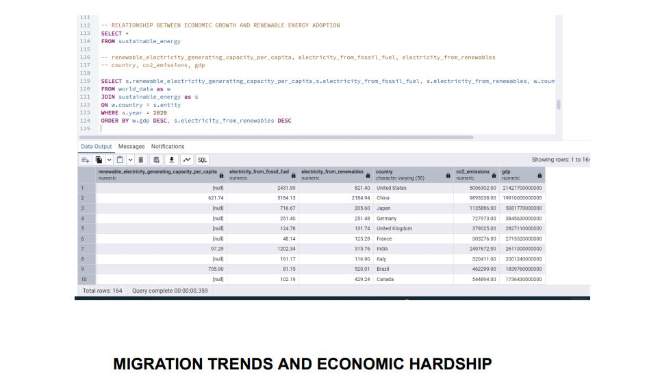

Data Analysis
Cleaning, exploring and interpreting datasets to identify trends, patterns and opportunities.
’m Miracle Ozioma Nwokeocha — a data analyst and business administration professional who turns complex information into clear insights, practical strategies and better business decisions.
Good analysis does more than explain what happened. It helps people decide what to do next.
With a foundation in business administration and data analytics, I enjoy solving problems, improving processes and making information easier to understand. I bring together analytical thinking, communication and a practical understanding of business operations.
My work spans data cleaning, reporting, dashboard development, financial analysis and research. I’m committed to continuous learning and delivering work that supports measurable progress.
Practical analytical and administrative support designed to help teams understand performance and work smarter.
Cleaning, exploring and interpreting datasets to identify trends, patterns and opportunities.
Presenting findings through clear reports, charts and interactive dashboards.
Supporting planning, operational efficiency, financial review and informed business decisions.
A selection of analysis and business projects demonstrating my approach to problem-solving.

Advanced formulas and structured analysis, completed as part of my Start2Impact learning journey.
View project
Exploring the relationship between economic growth, renewable energy adoption and emissions.
View projectMy technical toolkit continues to grow as I work on projects and develop new capabilities.
Reach out to discuss data analysis, reporting or business support.